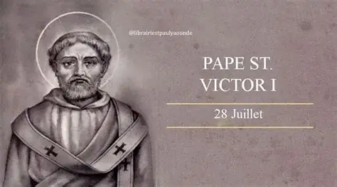

Afrique romaine
Saint Victor Ier
vers 189 — 199
Premier pape africain connu. Il favorisa l'unité de l'Église et fixa la célébration de Pâques le dimanche.
- ✠ Origine : Afrique romaine
- ✠ Fête : 28 juillet
- ✠ Canonisé